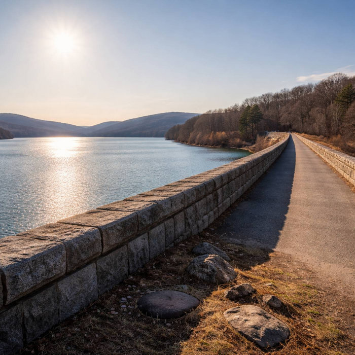
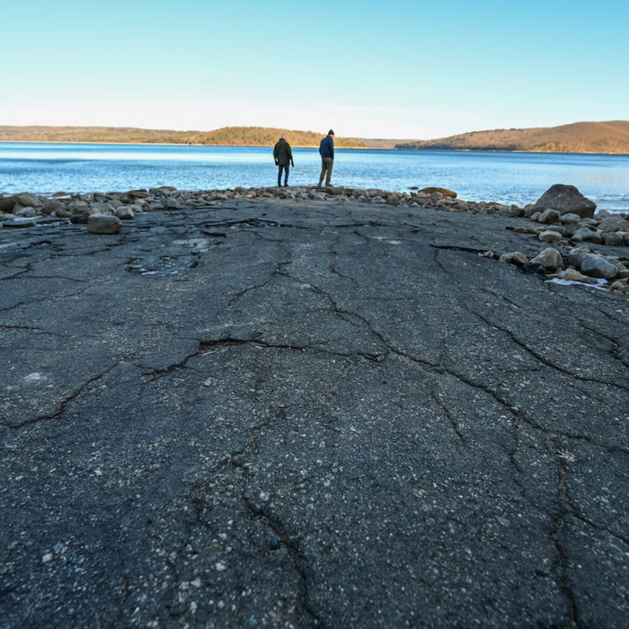
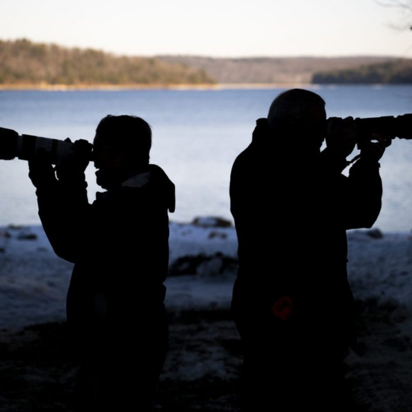
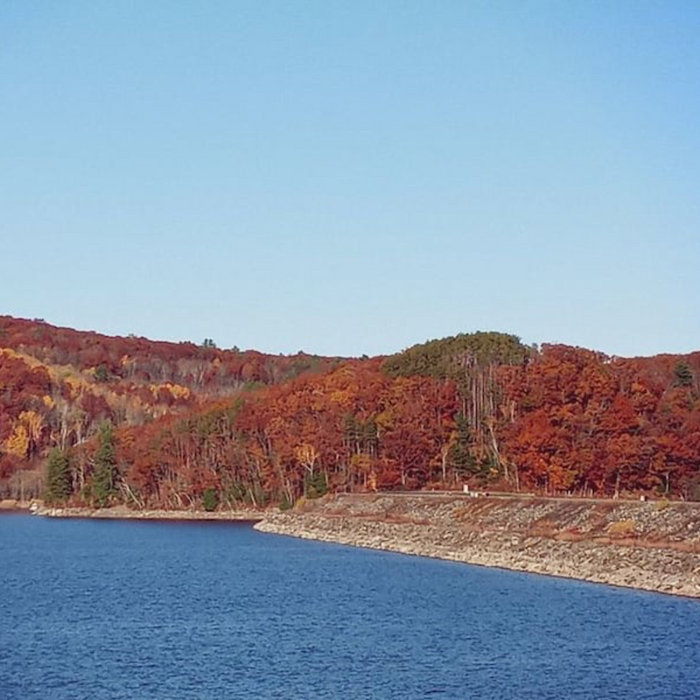
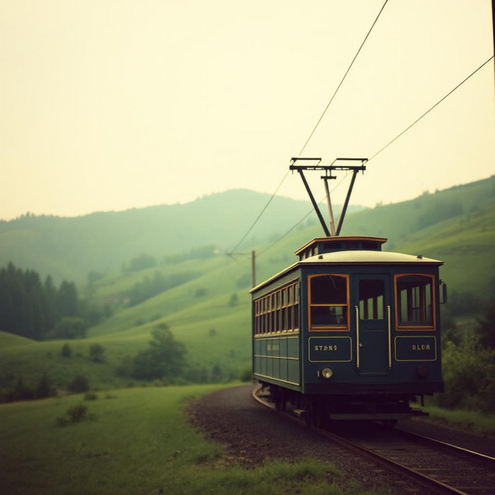
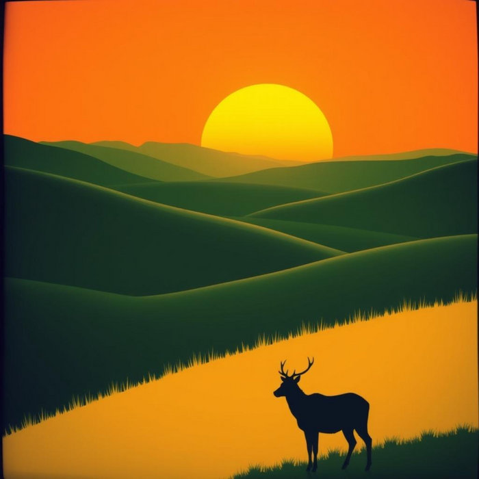
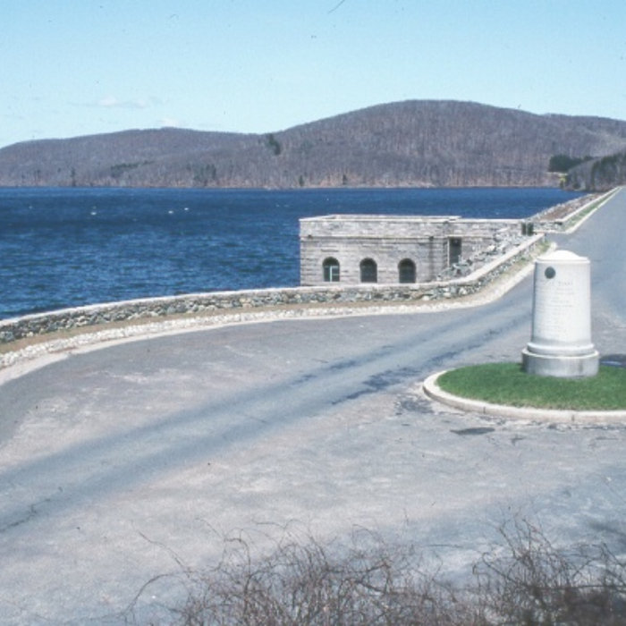
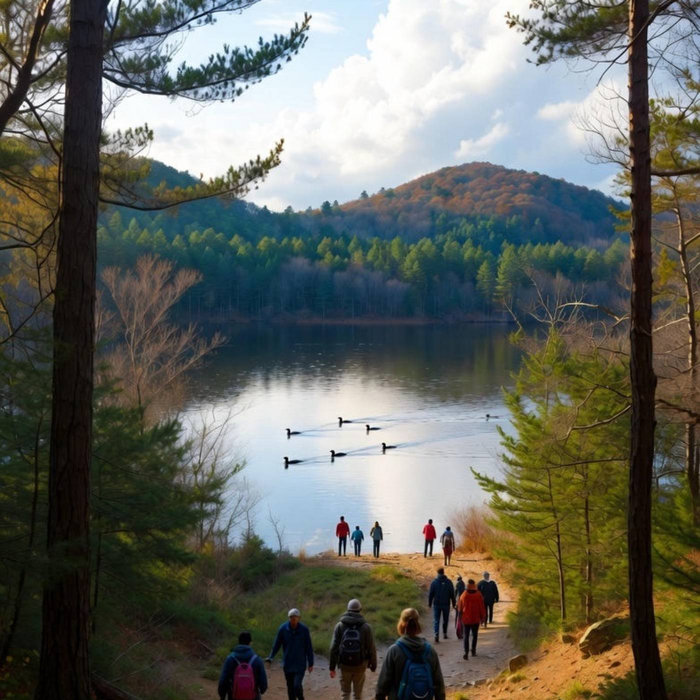
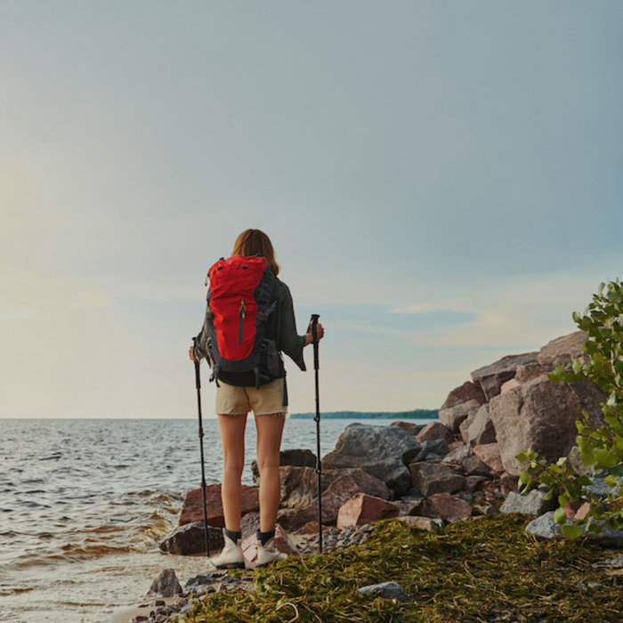
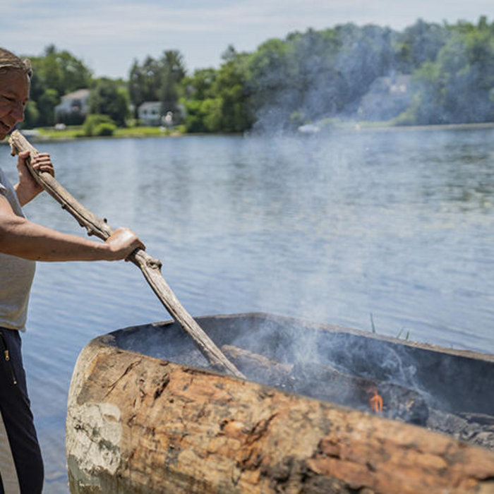

Walking Across the Dam
Early spring on the dam. No leaves yet, just bare trees, open sky, and the first real stretch of sun after months of gray.
Hear it on Bandcamp
Writer and songwriter · Granby, MA
I keep coming back to the Quabbin. These are the songs it has given me.
Photo: the Quabbin dam in early spring, cover of “Walking Across the Dam”
Why the Quabbin
I live in Granby, not far from the reservoir, and the Quabbin has a way of finding its way into my songs.
Some of it is the place itself. Early spring on the dam, before the leaves come, when the wind comes off the water sharp and clean and every step feels like shaking off winter. Fog on the road in the morning. Boat ramps closing at dusk.
Some of it is what lies beneath the water. Four towns of the Swift River Valley were given up so the rest of the state could drink. Their names are never far from the surface, and dry winters bring that history close again. I try to write about it slowly, with respect for the land and the people who gave it up.
And some of it is the people who care for it now. One day, walking across the Winsor Dam, I met DCR staff who spend their days looking after our parks, forests, and waters. We talked about music and the land, and that conversation became “Walking With The Land” and the DCR songs that followed.
At home I’m keeping seven acres of former farmland in Granby open, so I feel a kinship with everyone who keeps this watershed protected. These songs are my thanks to them.
Songs of the reservoir

Early spring on the dam. No leaves yet, just bare trees, open sky, and the first real stretch of sun after months of gray.
Hear it on Bandcamp
Begun as a poem, shaped by reading, walking, and old maps. The drowned towns are never far from the surface.
Hear it on Bandcamp
Neighbors paying attention to birds, water, light, and seasons, and teaching each other how to see better.
Hear it on Bandcamp
Fog on the road in the morning, boat ramps closed at dusk. A song for the towns closest to the reservoir.
Hear it on Bandcamp
Inspired by the Quabbin Trolley Excursion, a ride through the history of the Swift River Valley's lost towns.
Hear it on Bandcamp
For 380 acres in Orange, Wendell, and Royalston, now protected for wildlife, clean water, and future generations.
Hear it on BandcampFor the people who care for the land

Written after meeting DCR staff on the Winsor Dam. Meant to be sung together, simple and steady, like footsteps on a trail.
Hear it on Bandcamp
For Gratitude After Gravy, DCR's free family hikes the day after Thanksgiving.
Hear it on Bandcamp
For First Day Hikes, a 35-year tradition of walking into the new year outdoors.
Hear it on Bandcamp
On stewardship rooted in deep time, and the responsibility we carry now.
Hear it on BandcampKeep going
Friends of Quabbin has kept the valley’s history alive since 1984.